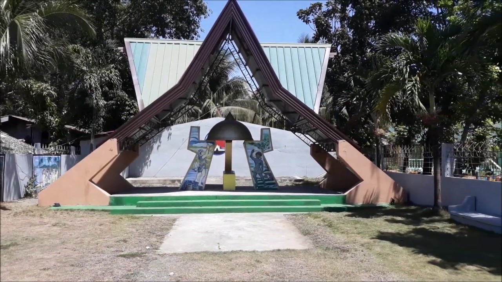
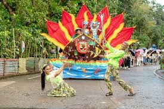
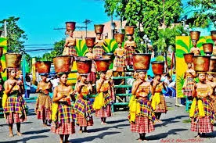
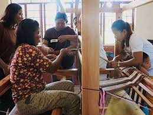
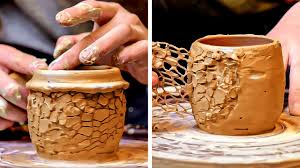
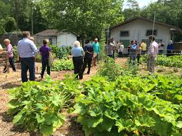
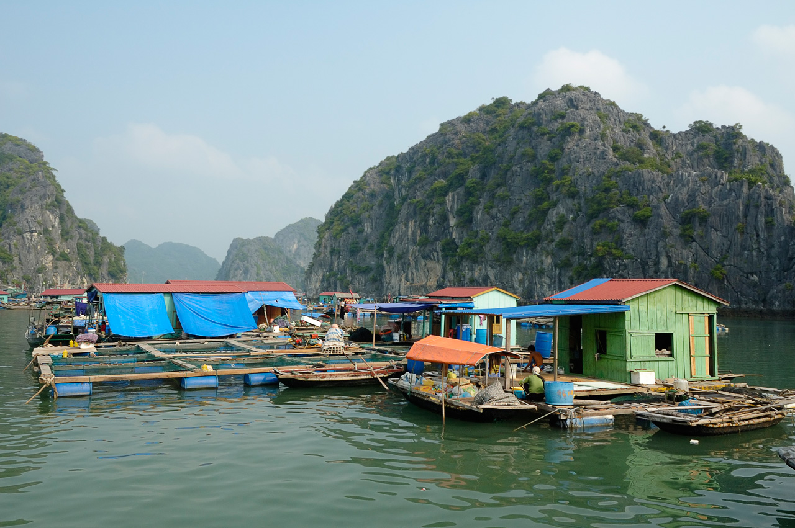
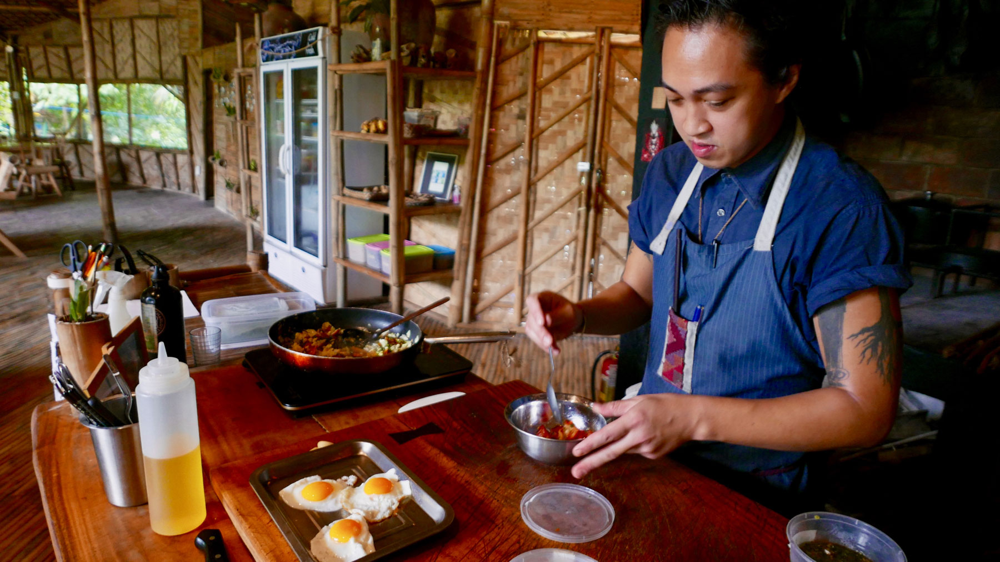
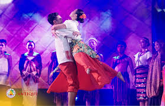
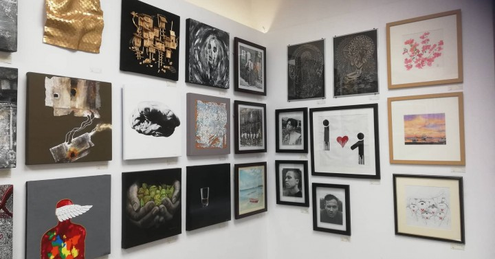

Cultural Experiences
Step into the heart of Antique and immerse yourself in its rich heritage and traditions.
Antique offers travelers the chance to explore centuries of history, tradition, and local culture. Visit centuries-old churches like San Jose Church and St. Peter’s Parish, or discover heritage markers such as the Malandog Marker and Dr. Jose Rizal Monuments, each telling stories of the province’s past and the resilience of its people.
Participate in vibrant local festivals, where traditional dances, music, and costumes bring the streets alive, or join community workshops to learn skills like weaving, pottery, and local crafts. Antique also offers opportunities to engage with local farmers, fishermen, and artisans, giving visitors a genuine taste of daily life in the province. From historic sites to hands-on workshops, every cultural experience in Antique connects you to the heart, traditions, and warmth of the Antiqueño people.
Heritage & Historical Sites

Malandog Marker (Hamtic / San Jose area)
Activities: Sightseeing, historical photography, guided heritage tours
Highlights: Marks the first Malay settlement on Panay Island, rich historical significance
Dr. Jose Rizal Monuments (San Remigio / San Jose)
Activities: Monument visits, learning about the national hero, cultural reflection
Highlights: Honors the life and legacy of the Philippines’ national hero

Centuries-Old Churches
Examples: San Jose Church, St. Peter’s Parish, and other heritage churches
Activities: Church tours, photography, attending local masses
Highlights: Spanish-era architecture, religious art, and community history
Festivals & Local Celebrations

Binirayan Festival (San Jose / Culasi)
Activities: Street dancing, cultural performances, parade watching
Highlights: Celebrates Antiqueño heritage, traditional music, and dances

Pandan Mangrove Festival
Activities: Eco-cultural tours, traditional boat races, local performances
Highlights: Combines environmental awareness with Antiqueño cultural celebration

Town Fiesta Celebrations
Locations: Across Antique towns like San Jose, Pandan, Culasi
Activities: Participating in religious processions, feasts, and community games
Highlights: Vibrant local traditions, colorful costumes, festive food
Traditional Crafts & Workshops

Weaving and Textile Workshops
Activities: Hands-on weaving lessons, learning traditional patterns, souvenir making
Locations: San Jose, Pandan, Culasi
Highlights: Experience Antiqueño craftsmanship and create your own keepsake

Pottery and Clay Art
Activities: Pottery demonstrations, clay molding, art-making workshops
Locations: Local artisan communities in Sibalom and Hamtic
Highlights: Traditional techniques passed down generations, unique handmade pieces
Culinary Workshops
Activities: Cooking Antiqueño dishes like laswa, budbod, and inubarang manok
Locations: Homestays, community kitchens, local restaurants
Highlights: Learn recipes, understand local ingredients, and taste your creations
Rural & Community Immersion

Farm Visits & Agricultural Tours
Activities: Harvesting rice or vegetables, learning traditional farming methods
Locations: Sibalom, Libertad, Pandan
Highlights: Authentic hands-on experience, connecting with local farmers

Fishing Villages & Coastal Life
Activities: Accompanying fishermen, net-casting lessons, seafood preparation
Locations: Culasi, Mararison Island, Pandan
Highlights: Observe daily life, sustainable practices, and local food sources

Village Homestays & Cultural Immersion
Activities: Stay with local families, participate in daily routines, join community events
Locations: Hamtic, Libertad, San Jose
Highlights: Genuine Antiqueño hospitality, learn local traditions firsthand
Arts & Performance

Traditional Music & Dance Performances
Activities: Watching cultural shows, participating in folk dances
Locations: Festivals, community centers, local theaters
Highlights: Antiqueño music instruments, lively folk performances
Storytelling & Oral History Tours
Activities: Listening to local legends, folk stories, historical narratives
Locations: Heritage sites, town centers, cultural hubs
Highlights: Preserving local history, engaging with Antiqueño storytellers

Art Exhibits & Galleries
Activities: Viewing paintings, sculptures, and local crafts
Locations: San Jose and Pandan art spaces
Highlights: Contemporary and traditional Antiqueño art, supporting local artists